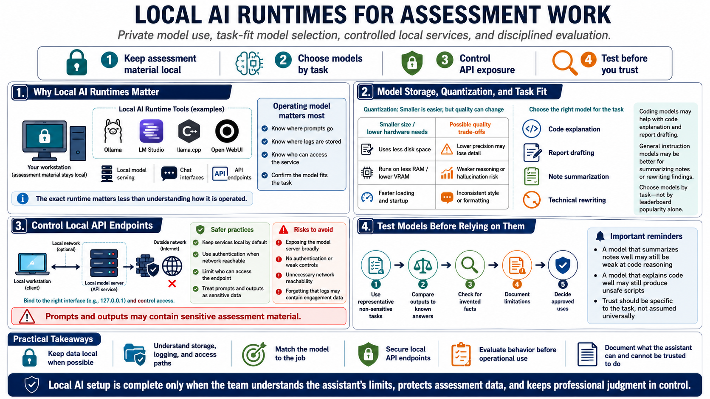

Local AI Runtime Setup
Connecting to LMS... Progress: in progress

Narration
Local AI runtimes provide a way to use models without sending assessment material to a public chatbot. Tools such as Ollama, LM Studio, llama.cpp, and Open WebUI can support local model serving, chat interfaces, and API endpoints. The exact runtime is less important than the operating model: know where prompts go, where logs are stored, who can access the service, and whether the model is appropriate for the task.
Model storage and quantization affect usability. Quantized models trade some precision for smaller size and lower hardware requirements. That can make local AI practical on laptops or desktops, but it can also change output quality. Coding models may be helpful for code explanation and report drafting, while general instruction models may be better for summarizing notes or rewriting technical findings. Choose models by task, not by leaderboard popularity alone.
Local API endpoints should be controlled. A model server bound to the wrong interface or exposed without authentication can create data exposure and resource abuse risk. Keep services local unless there is a deliberate reason to share them, and apply access controls when they are network reachable. Treat prompts and outputs as potentially sensitive engagement data.
Testing models before relying on them is essential. Give the model representative but non-sensitive tasks, compare outputs against known answers, check whether it invents facts, and document limitations. An assistant that summarizes notes well may still be poor at code reasoning. A model that explains code well may still produce unsafe scripts. Local AI setup is complete only when the team understands what the assistant can and cannot be trusted to do.